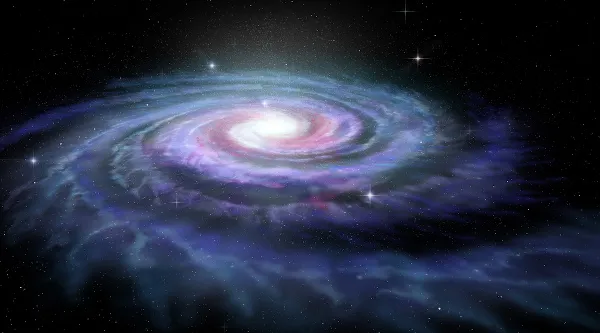
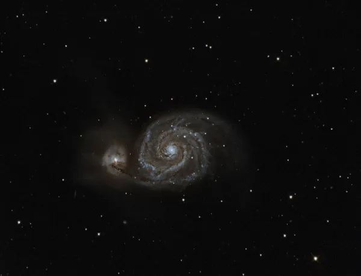

Via Láctea é a galáxia em que está localizado o Sistema Solar. Caracteriza-se por quatro enormes braços que formam uma espiral, pelo bojo central e um extenso halo galático.
A Via Láctea é uma galáxia do tipo espiral normal. Ela abriga diversos sistemas de estrelas, dentre os quais está o Sistema Solar.
Via Láctea é uma das galáxias que formam o Universo. Ela é uma galáxia do tipo espiral normal, formada por um bojo, quatro enormes braços principais que compõem o seu disco e um amplo halo galático que a envolve. Matéria escura, gases, poeira e vários corpos celestes fazem parte da Via Láctea, incluindo o Sistema Solar. No centro da Via Láctea, a 26 mil anos-luz do planeta Terra, fica um buraco negro supermassivo denominado Sagitário A*, cuja primeira imagem foi divulgada no ano de 2022.
A Via Láctea é uma das centenas de bilhões de galáxias que formam o Universo. É nela que está localizado o Sistema Solar, conjunto de corpos celestes do qual o planeta Terra faz parte. Ela se estende por um diâmetro de aproximadamente 100.000 anos-luz, sendo que cada ano-luz corresponde a 9,46 trilhões de quilômetros. Os elementos que formam a Via Láctea, que são gases, poeira, matéria escura, estrelas e outros corpos celestes (planetas, planetas anões, asteroides, meteoritos etc.), orbitam o seu núcleo, dando origem, assim, a imensos braços que circundam essa região central a uma determinada velocidade que condiciona a formação de um disco achatado. Em função disso, a Via Láctea é classificada como uma galáxia espiral normal.
O processo de formação da Via Láctea teve início há aproximadamente 14 bilhões de anos. Acredita-se que a origem da nossa galáxia coincide, então, com a origem do Universo, o que é explicado pela teoria da expansão (ou explosão), que ficou conhecida como a teoria do Big Bang. Os elementos que compunham o Universo de então estavam dispostos unicamente na sua forma gasosa.
Nessa etapa inicial, a Via Láctea consistia em uma protogaláxia formada por nuvens de gás. Com o passar do tempo, o material foi se resfriando e houve o que se chama de colapso ou contração dessas nuvens, o que fez com que parte dos elementos se aglutinasse, dando origem às primeiras estrelas, que integraram a nossa galáxia e receberam o nome de aglomerados globulares.
Tanto as estrelas recém-formadas quanto as nuvens gasosas desempenhavam movimento rotacional em torno do centro da galáxia, inicialmente compondo um halo esferoidal. A rotação desse material acontecia a uma velocidade elevada, fazendo com que o conjunto viesse a adquirir o formato de um disco achatado.
É importante destacar que a formação da Via Láctea compreendeu ainda a incorporação de matéria de galáxias menores situadas próximo a ela, processo esse que é chamado também de colisão de galáxias. Esse fenômeno foi descoberto mediante a observação de grupos de estrelas que giravam em uma direção oposta à do restante da Via Láctea. Uma dessas galáxias foi a Gaia-Enceladus, que acabou sendo “engolida” pela Via Láctea há aproximadamente dez bilhões de anos.